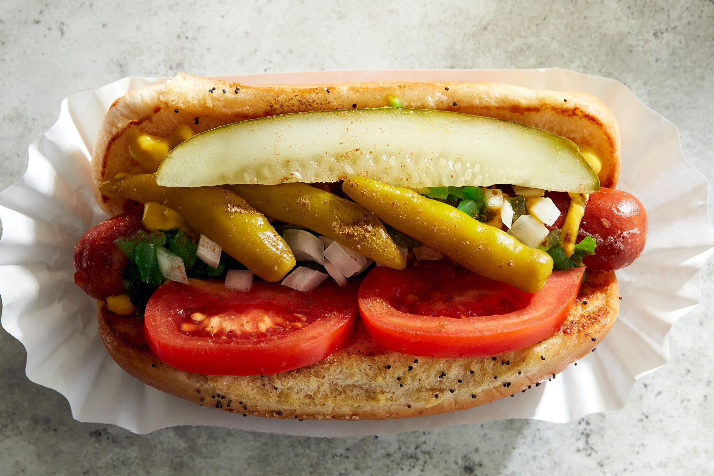

Chicago Style Hot Dog Recipe

Description
This hot dog is a Windy City classic and a big favorite with sports fans! The frank must be all-beef, the bun must be poppy seed, and the ingredients must be piled onto the bun in the order specified. And whatever you do, don't spoil the splendor of this Chicago dog with ketchup!
Ingredients
- 1 all-beef hot dog
- 1 poppy seed hot dog bun
- 1 tablespoon yellow mustard
- 1 tablespoon sweet green pickle relish
- 2 tomato wedges
- 1 tablespoon chopped onion
Steps
- In a heavy saucepan, heat the oil over medium heat. Once hot, add the white rice and lime juice and sauté for 60 seconds to toast the rice.
- Add the water and bring the rice to a boil. Cover and reduce the heat to low and cook until the rice is tender and all the water is absorbed.
- Combine the vegetable oil, chopped chipotle peppers in adobo, garlic powder, cumin, dried oregano, and black pepper in a small bowl.
- Place the chicken in a large zip top plastic bag and add the marinade. Zip the bag and mix the chicken into the marinade. Place it into the fridge and let it marinate for at least 1 hour.
- Grill the chicken 5 to 6 minutes per side, until the chicken is cooked. Remove the chicken from the grill and let rest for 10 minutes to lock in the juices before chopping.
Back to Home